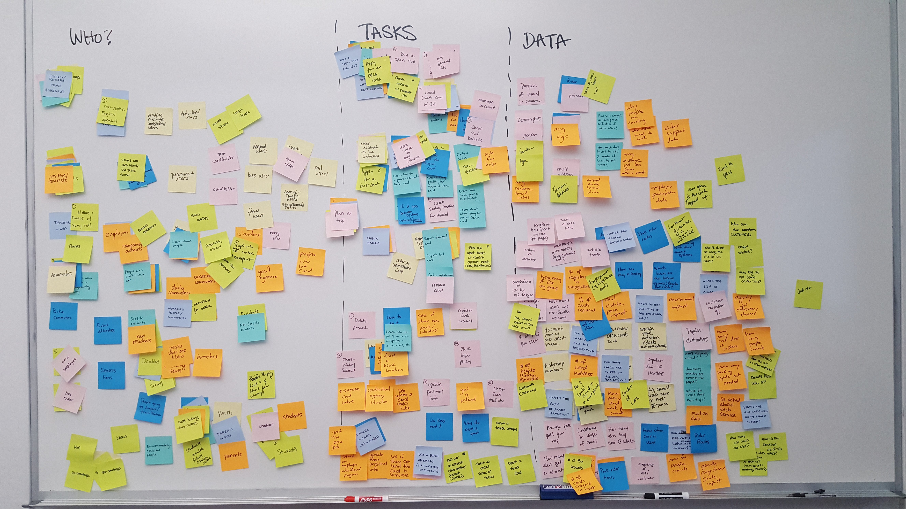

I used words and minimal CSS changes to improve the experience of ORCA's 'Forgot Password' flow.
Background
This project was part of a UX Writing class that I took at School of Visual Concepts (SVC) in Seattle. ORCA (One Regional Card for All) is a card that enables people to easily pay for nearly all of the public transportation services in the Seattle area, including the bus, ferry, lightrail, and streetcar. ORCA users can load money and regional passes onto the card through ORCA's website and through vending machines located throughout the city.
Team
Brita Ness, UX Writer
Mentors
Torrey Podmajersky, UX Writer
Elly Searle, UX Writer
Skills
UX writing UI design
Timeline
5 Weeks
Tools
Paper and pencil Sketch
Identifying ORCA's Users
Before beginning to write, we defined who uses ORCA, why they use it, and how they use it. We also began to consider what types of use data would be useful to internal stakeholders.

Our Assumptions
While it would have been ideal to gather actual data on ORCA's user base, our short timeline for the project did not permit in-depth research. As a result, we came up with some assumptions to work from about who uses ORCA; and why, when, and how they use it. From there, I would propose creating several personas to keep design decisions rooted in actual user needs. In my own research, I analyzed ORCA's core value proposition, how they appeal to users, and how they attract more people to use their service.